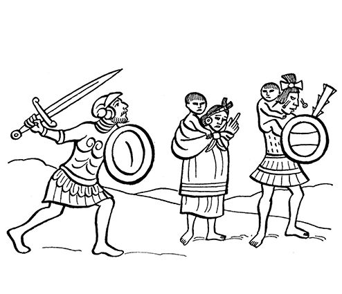
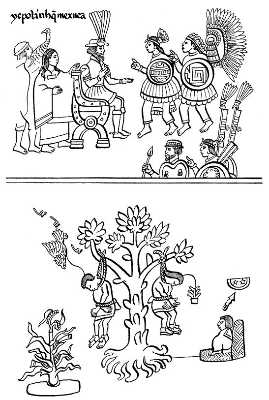

阿兹特克帝国驻华使馆
目录 |
第十三章 墨西哥-特诺奇蒂特兰的陷落
导 言
关于墨西卡人伟大都城的陷落，本章选用了三个印第安人的文本，见证了当时的情况。第一个是萨阿贡实情提供者叙述的最后一个预示墨西卡人即将失败的征兆。根据这一印第安人的文本记载，是瓜乌特莫克自愿向西班牙人投降的。接着该文本向我们详细地描述了特诺奇蒂特兰陷落的悲剧。 第二个见证来自前文已经多次提到的阿尔瓦·伊斯特利尔索奇特尔所著的《第十三篇记述》，这一文本记录了瓜乌特莫克成了俘虏后对科尔特斯所说的话，描述了他拿起这个征服者的匕首，要求后者像消灭墨西哥帝国那样结束自己的生命这一幕场景。这里全文转录伊斯特利尔索奇特尔的话是很重要的，他肯定地说在墨西哥-特诺奇蒂特兰被围期间，“几乎所有墨西哥贵族，除一些头人、少数有识之士以及稍多一些的孩子和婴儿”以外，都失去了生命。 本章使用的第三个也是最后的文本来自奇马尔巴音的《第七部记述》，书中记述了科尔特斯如何获得所有土地，如何折磨墨西卡首领以便从他们手中获得黄金以及他们从远古以来积存的珍宝。 特拉特洛尔克无名作者撰写的《墨西哥纪事，1528》中有关征服的纪事部分将在本书第十四章全文刊出。该纪事向读者提供了一幅最令人伤感的图画，表现了墨西哥首都陷落后被征服者如何被迫迁移和沿途所受的凌辱。
最后一个失败的征兆
天空出现一团大火。傍晚时分开始下雨，毛毛细雨。大火此时出现，像是自天而降，并下雨般不断地喷出露珠一样的火星。大火像旋风一样旋转，不停地喷射出火花。火花有大有小，还有的是一些小小的火星。它们都像烧红的火炭那样噼啪作响。大火就像铁管放进火中一样发出很大声响，有时呼呼轰鸣，有时嘶嘶作响。大火还把靠近水边的城墙围困起来。在克尤纳卡克1大火终于停下不动了。从那里掉在湖面上，接着便消失不见了。众人都被吓得不敢乱叫，也没人说一句话。 第二天一天平安无事。我们的敌人除了坚守阵地，什么都没做。 队长科尔特斯站在离阿马萨克不远处的阿斯特乌特辛宫殿的高台上，头上撑着五颜六色的华盖，注视着眼前的动静。
瓜乌特莫克和其他墨西卡人最后的决定
墨西卡人聚集在托尔马耶坎商讨下一步该如何应对，如何给西班牙人上交贡品，以何种方式表达我们向他们降服。聚集的人中有瓜乌特莫克和墨西哥的其他王子…… 接着有人把瓜乌特莫克扶上一条小船，船上只有指挥官特普特斯提托和他的仆人雅思塔奇马尔两人陪着他。还有一个划船的人名叫森雅乌特尔。 在把瓜乌特莫克送走时，所有人都哭了，他们说： “我们最年轻的王子瓜乌特莫克走了！他向西班牙人投诚去了，他向‘天神’投诚去了！”
瓜乌特莫克被关押
瓜乌特莫克被带走，当他上岸时西班牙人都来观望，并牵着他的手，把他带到屋顶平台，让他站在战争的统帅、队长科尔特斯前面。 科尔特斯仔细端详着他，还用手拨弄他的头发，然后叫他坐在自己的对面。 西班牙人发射大炮，但没伤及任何人，炮弹只是从墨西卡人头上飞过。 接着，他们抬出一门大炮放在船上，把它运到克尤瓦瓦特辛宫殿并安置在宫殿的平台上。
大逃亡
接着，又是一次大屠杀，很多人在这次屠杀中死去。于是战斗告一段落，大逃亡开始了。墨西哥人叫道： “这太过分了！……我们走！……我们宁愿去吃草！……” 当人们听到这种叫声时，大逃亡开始了。 一些人乘船逃跑，另一些人走大路，这时又有一些人被杀。西班牙人感到恼怒，因为印第安人带走了一些他们的木棒和盾牌。 住在城里的人直奔阿马萨克而去，他们径直来到大道的岔路口处。可怜的人们从那里向四处溃散，有的向特佩亚卡克逃去，有的向索索乌伊蒂特兰逃去，还有人向诺诺瓦尔克逃跑，但是没一个人向苏洛科和马萨特辛塔马尔科逃跑。 所有住在船上和住在湖上木架屋以及住在托尔马耶坎2的人都跳水而逃。水深齐胸，还有的地方水深没过脖子，有的人在更深的水中淹死了。 小孩子们被大人背在背上，哭声一片。但也有的孩子还很高兴，他们在路上手拉着手，觉得很好玩。 有船的人选择晚上离开，也有人白天离开。逃跑时他们免不了互相磕碰。 
西班牙人见什么抢什么 西班牙人在路边上见人就抢。他们在寻找黄金，但是对玉石、克查尔羽毛和绿宝石不屑一顾。 年轻的姑娘们常把这些宝物放在胸前或宽裙里；男子们则把东西放在嘴里或马斯特莱里面。 征服者还挑选麦色皮肤或肤色白皙的女人占为己有。有些女人在遭到劫持前曾把污泥涂在脸上或穿上烂布条做的上衣和宽裙加以掩饰。 他们对男人也进行了挑选，把勇猛健硕、有男子气概的人挑选出来供他们役使，还挑选刚刚成年的小伙子做仆人，为他们送信或传递消息。 西班牙人还在有些人的嘴上、面颊上或嘴唇上用烙铁打上烙印。 印第安人放下盾牌——这就意味着他们被打败了——那年是3-房屋年，神历1-长蛇日3。 瓜乌特莫克投诚后，晚上被带到阿卡奇南克。第二天，太阳刚刚露头又有很多西班牙人赶来。这是瓜乌特莫克的最后一天，西班牙人全副武装，穿着铁盔甲和头盔，但没人带剑也没人带盾牌。 死尸散发着恶臭，使人恶心，所有人都徒步前来，都用白布挡着鼻子。 西班牙人攥着瓜乌特莫克、克阿纳克奇特辛、特特莱潘科特萨尔特辛的披风，三个人是并排走来的……  墨西卡人臣服（特拉斯卡拉抄本）
科尔特斯要求瓜乌特莫克交出黄金
战斗一结束，科尔特斯便叫印第安人交出西班牙人逃跑时扔在托尔特卡运河里的黄金。 当时科尔特斯把各位国王都召集过来，对他们说： “你们的金子都藏在什么地方？” 于是有人把船上的黄金都取出来上交，有金条、金冠、金手镯、金脚镯、金帽、金盘等。这些黄金都放在科尔特斯面前，西班牙人急忙把这些黄金收好。 接着，科尔特斯又说道： “藏在墨西哥的黄金就这点儿吗？你们必须把所有的黄金都交上来！先去找大块黄金！” 这时军队统领特拉克特辛开口了： “我的大人，我们的神祇，请您聆听我的话：所有送到宫廷的黄金我们都埋在了墙下。大人们难道没拿走吗？” 这时，马林辛把队长科尔特斯的话翻译给他听： “是的，我们都拿走了。我们都把黄金堆在一起，并打上记号。但是你们在托尔特卡运河上把黄金都夺了回去，将它们沉到水底，现在你们应该全部捞上来。” 特拉克特辛答道： “您听着，队长，我们的天神：特诺奇蒂特兰人不善水战，那不是他们能做的事情，倒是特拉特洛尔克人可以。他们在船上打仗，在你们进攻时进行自卫。难道不是他们特拉特洛尔克人拿走了所有的黄金吗，我们的大人？” 此时，瓜乌特莫克对特拉克特辛说道： “你都说些什么话，统领！有可能他们拿走了黄金……但难道他们没有被俘，没有得到应有的惩罚？他们不是把黄金都拿出来了吗？他们不是都被集中在德索潘，他们交出的黄金不都在这里吗？” 他一边说一边用手指那堆黄金。 这时马林辛又翻译了科尔特斯的话： “就这么一点儿？” 军队统领答道： “也许有人拿走了一些……为什么不查一查呢？队长不应该把事情搞清楚吗？” 马林辛又译道： “你们应该交出二百条黄金！每条都那么大……” 她用双手比划着一条黄金的大小。 军队统领答道： “很可能有些小女子把黄金放在裙子里。还是要查一查啊，还是要眼见为实。” 这时在场的庙宇总管阿瓦利托克说道： “我们的大人，我们的主人，队长科尔特斯您劳驾听着：在蒙泰古祖玛时期，如果决定征服某地，墨西哥人、特拉特洛尔克人、特潘内卡人、阿科尔瓦坎人我们都会一起行动。阿科尔瓦坎和奇南巴地区的人也都来参加。 我们一起协力攻打一个村子，当把对方降伏，我们就回来了，每个地方的人又都回到自己原来居住的地方。 不久，被征服的村落村民便来交贡，交出他们的财产，如玉石、黄金、克查尔羽毛，还有绿松石、羽毛柔软的飞禽、蓝色食蜂鸟、红颈鸟，这些都要直接送给蒙泰古祖玛。 无论他们在什么地方都要把黄金和贡品统统交到这里，交到特诺奇蒂特兰……”4
阿尔瓦·伊斯特利尔索奇特尔的记述5
当城市陷落的那天，西班牙人对不幸的墨西哥人又犯下了最为残酷的暴行。此时女人和孩子们的哭声撕碎了男人们的心。特拉斯卡拉人和其他与墨西哥人关系不好的族群对过去发生的事情大加报复，劫掠了他们所有的东西。 特斯科科人伊斯特利尔索奇特尔是科尔特斯的盟友，但他和他的人马都和墨西哥人同在一个聚居地，很多人还是他的亲戚，因此十分同情墨西哥人的遭遇。他阻挠征服者对妇女和孩子施加暴行，反对科尔特斯和其他西班牙人犯下的暴行。傍晚，伊斯特利尔索奇特尔一行人退到自己的营地，在那里他与科尔特斯和其他头人商议第二天不能再去打家劫舍。 这天是圣依波利多·马尔蒂尔日，科尔特斯搜遍墨西哥人的大街小巷，而伊斯特利尔索奇特尔的帆船队队长则划向一个小湖，因为伊斯特利尔索奇特尔得到消息：瓜乌特莫克国王和其他很多人都在那里的一条船上，所以便向那里划去。 看到墨西哥人的样子实在让人感慨。茫然、痛苦的武士们靠着高台的矮墙上，眼睁睁看着自己的失败，看着老幼妇孺痛哭流涕。头人、贵族和他们的国王躲在独木舟上，一脸不知所措的样子。
瓜乌特莫克被监禁
一见到信号，我们的人就同时向敌人的各个角落进攻，袭击如此之快，仅仅几个小时便取得了胜利，把敌人的财产洗劫一空。帆船和独木舟也向征服者的船只进攻，西班牙人无法抵抗，想尽一切办法逃跑，我们紧追不舍。一艘西班牙帆船的船长加西亚·德·奥尔金从一个墨西哥人处得知国王正乘坐在一只独木舟上，便赶紧追赶，最后追上并逮捕了他。 于此之前，国王瓜乌特莫克看到敌人追近，命令划船工扭转船头前去迎战，他本人则手握护胸盾与木棍准备与敌人死拼，但看到敌人过于强大并用弩炮和火枪进行威胁，他表示降服了。
瓜乌特莫克面对科尔特斯
加西亚·德·奥尔金把瓜乌特莫克带到科尔特斯面前，后者很客气地接见了他，最后把他当成国王对待。瓜乌特莫克抚摸科尔特斯的匕首对他说： “啊，队长，我尽全力来保护我的王国，并从您的手中使我的王国获得自由，但我的运气不佳，您杀死我吧，这样墨西哥王国自然就不存在了。因为我的臣民已被杀死，我的城池已被夷为平地…… 还有一个令人遗憾的原因就是这里的人在这种情况下见到了您大人，已经无心恋战。” 科尔特斯劝慰他，并要求他命令部下投降。瓜乌特莫克听从了。他登上一座高塔，高声叫他的臣民投降，因为他们的命运已经掌握在了征服者的手中。墨西哥人原本30万人，现在只剩下6万人在战斗。看到了他们的国王已经放下武器，几个有名望的人都过来劝慰他。 伊斯特利尔索奇特尔很想亲自捉拿瓜乌特莫克国王，但他一个人无法办到，因为他乘坐的是像帆船一样的独木舟，并不轻快。6但他追上了其他两艘船，上面坐着一些头人和首领，如特拉克潘国王继承人特特莱潘科特萨尔特辛、蒙泰古祖玛的继承人，他的儿子和其他很多人。在另一条船上，坐着古伊特拉瓦克国王的王后帕潘特辛·奥索莫克和她众多的随从。 伊斯特利尔索奇特尔将他们捕获并把他们带到科尔特斯面前，科尔特斯把王后和她的随从押解到特斯科科城严加看管。
包围时发生的事
据历史、图画和记述文字记载，尤其是堂阿隆索·阿萨亚卡特尔的记载，围城共持续了80天。特斯科科王国伊斯特利尔索奇特尔方面的人死了3万人，他们是西班牙人和友军20万人当中的一部分，墨西哥方面24万人丧失性命，这些人当中大部分是墨西哥贵族，只剩下为数不多的头人和绅士，以及孩子和年幼者。 这天在洗劫了城市之后，西班牙人虏获了不少黄金、白银。文职人员给自己留下了宝石和贵重羽毛，士兵们抢走了被子和其他东西。洗劫完毕后，他们埋葬了同伴的尸体，再大肆庆祝了一番。7
奇马尔巴音的记述：城市陷落之后
在脱下战服，放下剑、盾之后，头人们被集中在阿卡奇南克。第一个就是特诺奇蒂特兰的头人瓜乌特莫克；第二个是军队统领特拉克特辛；第三个是阿斯卡波特萨尔科国的头人奥吉斯特辛；第四个是艾克特佩克的头人潘尼特辛；第五个是莫德尔乌伊特辛王室大总管，他不是王族，但却是军队指挥官。 科尔特斯将这五个人拉下马，将他们捆绑起来押解到克尤阿坎，只有潘尼特辛没被捆绑。在克尤阿坎都把他们当作俘虏关押起来，并用火烤他们的双脚。另外他们还拷问了瓜乌科瓦特尔和几位祭司，他们是克瓦伊乌依特尔、特科温特辛和德特兰梅卡特尔。西班牙人审问他们过去丢弃在托尔特卡运河里黄金的下落（当时西班牙人在墨西哥人的追击下从塔库巴大道逃跑时把这些黄金都丢到运河）；审问他们堆放在王宫里的黄金的去处——后来又把这些黄金化成八根金条，原来这些金条由王室总管奥古伊德卡特尔看管，他死后——他死于天花——落在他儿子手里，八根金条仅剩下四条，总管的儿子不知去向。 被带到克尤阿坎的五个人从牢房中出来，队长科尔特斯通过通译阿吉拉尔和马林辛对这五个曾经与之交战的墨西哥人——瓜乌特莫克、军队统领特拉克特辛、奥吉斯特辛、潘尼特辛、莫德尔乌伊特辛说道： “我倒要看看谁是墨西哥、特潘内卡、阿科尔瓦坎、索契米尔科和查尔克的主人！” 墨西哥的五个头人马上交头接耳地讨论起来，待了一会儿军队统领特拉克特辛回答道： “噢！我的主人，我的天神，请您听听下面我要说的几句话：我是墨西卡特里人，原本房无一间地无一垄，当我来到特潘内卡、索契米尔科、阿科尔瓦坎，来到查尔克时，他们有房有地，我用箭和盾征服了他们，成了那里人的主人，成了那里土地的主人。 和您现在一样，您用箭和盾成了这里所有城市的主人，您到这里与我当初来到这里一样，就是为了用箭和盾攫取这里的土地。” 科尔特斯队长听了他的话便向特潘内卡人、阿科尔瓦坎人、索契米尔科人、查尔克人说道： “你们到前面来，这个墨西卡人用箭和盾抢走了你们的土地，抢走了一切属于你们的东西，你们要侍奉他。但是现在我要用箭和盾给你们自由，谁也不必再侍奉这个墨西卡人，拿回你们各自的土地吧……”8 1 克尤纳卡克（Coyonacazco），地名，意即“在野狼的耳朵上”，位于特诺奇蒂特兰。——原注 2 托尔马耶坎是西班牙人占领的地方。 3 按照阿兹特克的历法，3-房屋年，1-长蛇日相当于西历1521年8月13日。 4 萨阿贡实情提供者，《佛罗伦萨抄本》，第12卷，第39-41章（见卡里巴依译本）。——原注 5 这一节不像是伊斯特利尔索奇特尔所写的原文，倒像是编撰者对此书的介绍，故此使用不同字体标注。 6 前文说的是伊斯特利尔索奇特尔乘坐的是帆船。 7 参见阿尔瓦·伊斯特利尔索奇特尔，《第十三篇记述》，“西班牙人的到来和福音戒律之始”。——原注 8 弗朗西斯科·德·圣安东·穆尼翁·奇马尔巴音·瓜乌特莱瓦尼特辛，《第七部记述》（由米格尔·雷昂—波尔蒂利亚从纳瓦特尔语译成西班牙语）。从此书可以看出科尔特斯坚持巩固自己对墨西卡的统治权，为此他企图博取其他族群的好感，因为直到不久之前，这些族群还在忍受墨西卡人的统治。——原注 |
|---|